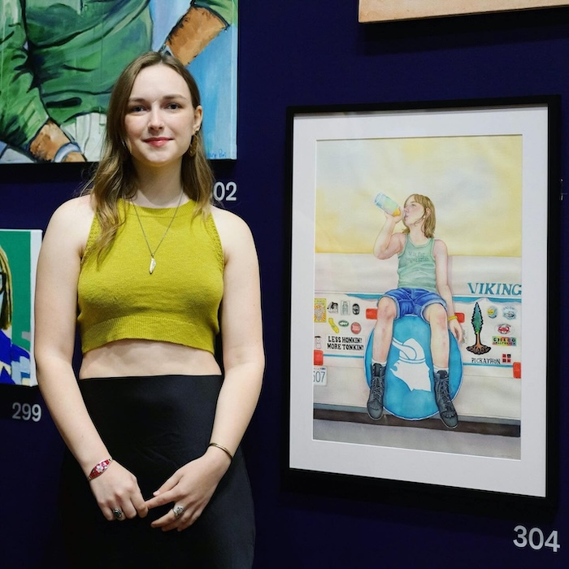

Scarlett Woolsey
Scarlett is a twenty-something emerging artist and designer based in San Francisco.
Highly influenced by her homeschooled childhood spent reading and building tree forts
with her peers, she values a sense of beauty and whimsy in her work. In addition to this,
her work is largely influenced by her ongoing quest to figure out being a woman in today's
society, as well as what part she plays in the world.
You can probably find her day dreaming on the train, lurking in a bookstore, dialing espresso
in a little coffee trailer somewhere, or soaking up sun like a lizard.